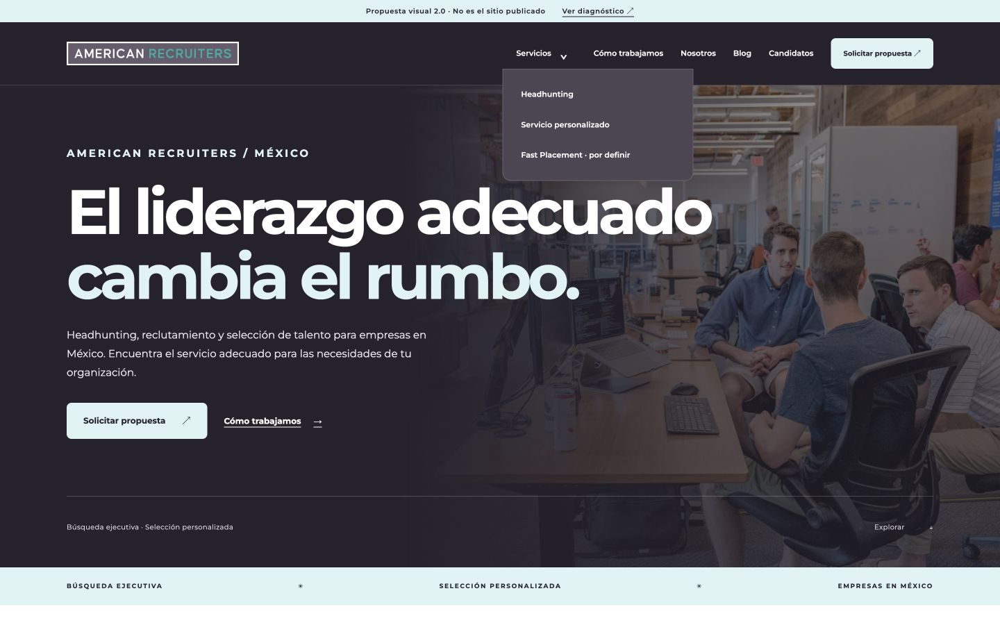
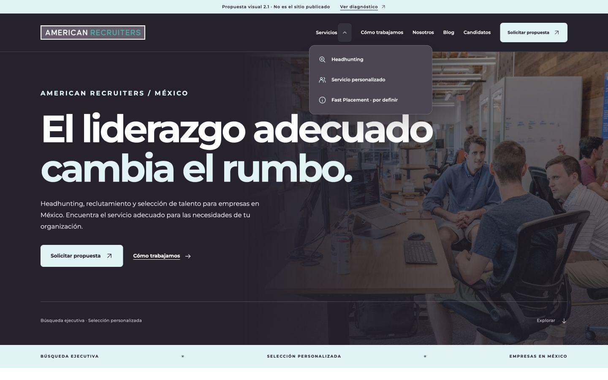
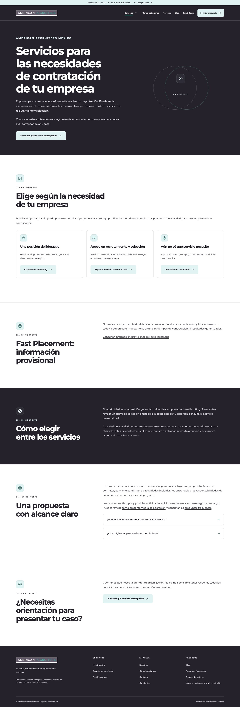
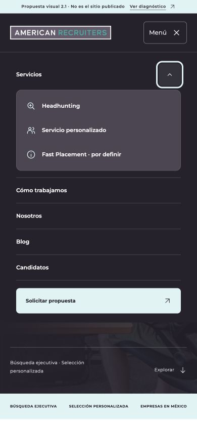

Qué cambió
El problema más visible estaba en la mezcla de flechas tipográficas, espacios de 24 px usados de manera desigual y un desplegable poco integrado. Se sustituyeron por vectores de geometría fija y una capa común de espaciado, estados y movimiento.




Checklist por componente
| Componente | Problema / decisión | Refinamiento | Estado |
|---|---|---|---|
| Header desktop | Glifos con líneas base distintas y separación poco precisa en Servicios. | Chevron SVG centrado; enlace de Servicios separado del control; panel de 292 px, iconos por servicio, radios y foco consistentes. | Corregido |
| Botones y enlaces | Flechas sin caja fija y espacios desiguales. | Iconos de 15–18 px, separación 10–12 px, alineación vertical común; elevación 2 px y desplazamiento de flecha 2–3 px. | Corregido |
| Menú móvil | El símbolo de menú no reflejaba claramente la apertura. | Dos trazos que se convierten en X; control de 44 px; enlaces del submenú de 48 px; fondo opaco durante la entrada; Escape y devolución del foco. | Corregido |
| Hero | Faltaba apoyo conceptual en las vistas sin fotografía. | Compás informativo en el gráfico existente; Fast Placement utiliza información, no velocidad ni promesas. Se mantiene la fotografía y el contenido. | Mejorado |
| Cards / servicios | Poca diferenciación conceptual y feedback uniforme. | Búsqueda, personas e información en rutas; iconos por criterios; borde y sombra discretos; CTA de cards editoriales alineado al final. | Mejorado |
| Institucionales | Encabezados repetitivos sin apoyos visuales. | Iconos de contexto, orientación, equipo y conversación según el encabezado. No se añade iconografía a cada párrafo. | Mejorado |
| Metodología | Secuencia visual poco expresiva. | Brief, alineación, búsqueda y decisión; línea de continuidad y entrada escalonada. Se conservan los cuatro momentos existentes. | Mejorado |
| FAQ | Los símbolos +/− dependían de la fuente. | Plus vectorial con trazo vertical que desaparece al abrir; caja y posición estables; details/summary nativo conservado. | Corregido |
| Blog archive | Hover básico y alturas variables de CTA. | Imagen con escala 1.025, acento inferior, título con feedback de foco, CTA al fondo; páginas 1/2/3 siguen siendo enlaces reales. | Mejorado |
| Artículo / TOC / sidebar | Poca jerarquía en los controles de lectura. | Índice con icono, indicador activo estable sin cambio de peso que refluya texto; sidebar con compás; enlaces e inline CTA con flecha consistente. | Mejorado |
| Footer | Feedback de enlaces discreto y áreas pequeñas en móvil. | Color/subrayado de hover y foco, altura mínima de enlace de 40 px en móvil; mismas columnas y destinos. | Mejorado |
| 404 / vacío | Símbolo tipográfico genérico. | Compás y búsqueda de la misma familia, conservando mensajes y navegación. | Mejorado |
| Formularios, SEO, WordPress | Fuera del alcance. | Sin cambios ni envíos. No se ejecuta PHP en este prototipo. | No aplicaba |
Iconografía y motion
Familia vectorial propia sobre retícula de 24 × 24, trazo de 1.6, extremos y uniones redondeados. Los iconos son decorativos, llevan aria-hidden="true" y no reciben foco. No hay fuentes de iconos, imágenes nuevas, APIs ni librerías externas adicionales.
| Interacción | Tiempo / amplitud | Propósito y límite |
|---|---|---|
| Botón y flecha | 180–280 ms; 2–3 px | Confirmar que el control es interactivo; sin modificar tamaño ni padding. |
| Dropdown y menú | 200–220 ms; 5 px | Conectar control y panel. Fondo siempre opaco; no desaparece el texto durante la transición. |
| Revelado de componentes | 620 ms; 14 px; escalonado 0–195 ms | Entrada finita al llegar al viewport. El contenido existe y es visible sin JavaScript; no se oculta esperando al observador. |
| Cards editoriales | 400–650 ms; escala de imagen 1.025 | Imagen dentro de un contenedor reservado y acento de lectura; misma respuesta de foco. |
| FAQ / secuencia / CTA | 280–600 ms | Estado abierto claro, continuidad de pasos y acento del icono; no se anima la altura del acordeón. |
Se emplean transformaciones, opacidad, bordes y sombras. No hay parallax, cursores personalizados, bucles infinitos, contadores ni animación de dimensiones. CSS total del prototipo: aproximadamente 35 KB; JavaScript: aproximadamente 5 KB sin minificar. Antes de WordPress se deben consolidar las capas CSS, no copiar overrides indefinidamente.
Movimiento reducido: se respeta prefers-reduced-motion y sus cambios durante la sesión. Además se verificó una simulación explícita de reducción: animación none y transición 0s. Esto no se presenta como prueba nativa de la preferencia del sistema operativo.
QA ejecutado
32 documentos × cinco anchos: 160 observaciones en navegador a 1440, 1024, 768, 390 y 360 px. Las interacciones móviles adicionales se probaron a 390 × 844.
- Sin overflow horizontal, H1 adicional, IDs duplicados, SVG inválidos ni campos de formulario habilitados.
- Los iconos de CTA quedan centrados verticalmente; diferencia máxima admitida y comprobada: 2 px.
- Desktop: ArrowDown abre Servicios y enfoca el primer enlace; End enfoca el último; Escape devuelve el foco al control. Foco visible de 3 px.
- Móvil: Enter abre menú y submenú; Escape cierra por niveles y devuelve el foco. Enlaces del desplegable de 48 px.
- Blog: clic en página 2 muestra seis artículos; clic en página 3 muestra cinco.
- TOC móvil: enlace al H2 de honorarios correcto. Tabla de 420 px dentro de región de 350 px, sin ampliar el documento de 390 px.
- FAQ: Enter abre la respuesta correcta. Consola del recorrido sin errores ni advertencias capturados.
- Textos principales, enlaces comerciales y formularios comparados contra V2.0, sin alteraciones editoriales.
Vistas refinadas
Las capturas de escritorio y móvil se encuentran en evidence/v2.1/. Son del prototipo local, no del WordPress publicado.




Preparado para implementación, después de aprobar
Listos como especificación visual: tokens de espaciado y motion, familia SVG, header/dropdown, botones, cards, cabeceras, pasos, FAQ, archivo, TOC y estados. Mantener el tema PHP + Gutenberg y los componentes compartidos; no migrar a Elementor.
- Acordar baseline final con RC2 y conservar respaldo antes de cualquier fase autorizada.
- Integrar iconos mediante un helper o template-part del tema; consolidar CSS y mantener el contenido editable.
- Aplicar los estados sin alterar permalinks, SEO, formularios ni publicación de borradores.
- Repetir QA en el WordPress real, anónimo, con caché, dispositivos reales y lectores de pantalla.
Pendientes de la fase real: movimiento reducido nativo, Core Web Vitals/CLS instrumentado, Safari y dispositivos físicos. El hover está implementado en CSS y comparte feedback con foco; no se certifica aquí un barrido de puntero independiente sobre cada card. Fast Placement, autorías y habilitación de formularios conservan sus dependencias anteriores.
No se ha implementado ni publicado nada en WordPress. Esta ronda queda lista para aprobación visual final, no para declarar un lanzamiento.
Rama aislada design/redesign-v2.1-20261025 ↗